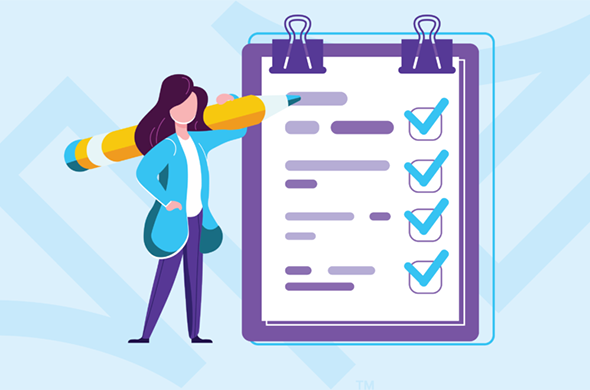

A lo largo de este proyecto estudié qué es aquello que los jugadores de videojuegos más deseaban ver en una página web para encontrar nuevos títulos y también cómo hacer que se sientan atraídos por el producto y vuelvan.


El número de consumidores de videojuegos aumenta año tras año y su oferta en el mercado es amplia y variable yendo desde opciones variando en función de consola (Xbox, pc, switch, PlayStation…), géneros o intereses propios. Esto a veces puede ser abrumador a la hora de querer buscar un videojuego apto para el ti mismo, por ello un recomendador online que te muestre opciones de acuerdo a lo que estes buscando es una herramienta ampliamente satisfactoria.
En esta fase describiré todas las posibles ideas que puedan involucrarse en este proyecto para crear una herramienta online enfocada en videojugadores y que les ayude a buscar un juego que se adapte a sus gustos, es decir, un recomendador de videojuegos.
Para saber cuáles eran los inconvenientes y las ventajas de crear un proyecto como este, hice mi propia búsqueda basándome en factores muy diferentes que podían implicar un impacto. A continuación pueden ver un ejemplo de lo que encontré.
Los videojuegos pueden tener distintas restricciones dependiendo de las políticas del país.
Regularización comercial como por ejemplo NAFTA.
Los ingresos y el nivel adquisitivo general puede ser muy variable entre unos países y otros.
La venta de videojuegos varía mucho a lo largo del año teniendo picos de ventas altos y bajos muy notables.
Las personas que piensan que son negativs y dañinos para la salud de aquellos que los consumen.
Juegos educativos que están aumentando significativamente en el mercado.
Gran aumento de los videojuegos online.
La gente cada vez depende más de la tecnología y tiene un acceso a ella fácil.
Mayor control sobre regularización de productos.
Mayor regularización sobre desechos electrónicos.
Mayor demanda de productos respetables con el medio ambiente. Esto incrementa principalmente la compra de juegos digitales y deshecha en mayor medida los físicos.
No solo estudiar el mercado es necesario. Conocer al público objetivo y saber cuáles son sus necesidades reales es primordial para el buen desarrollo del producto. Ellos son los usuarios finales, los consumidores, ellos deben ser escuchados. Esa es la mejor forma de saber exactamente qué es lo que buscan. Para ello realicé entrevistas personales con un grupo de jugadores habituales y ciertas encuestas online.
En las encuestas online me centré principalmente en establecer un ranking de prioridades en cuestión de filtrar búsquedas, para saber qué es lo que consideran más básico y lo que no, o más secundario. Esto será importante y se verá claramente reflejado en cómo estarán estructuradas las búsquedas.
Aun así de donde más información pude recopilar fue de las entrevistas. De ellas saqué información muy valiosa para crear una web realmente interesante para el usuario y que no solo fuese algo a lo que recurrir muy de vez en cuando. El punto más importante es el mantener la web actualizada con noticias e información de los videojuegos principalmente en temas de actualizaciones o bugs, ofertas, etc. La idea no es crear un blog de noticias, si no mostrar a los usuarios qué juegos tienen mayor atención por parte de sus creadores.
Tras analizar los resultados llegué a varias conclusiones que junto con el análisis de mercado explicado antes comentaré en el siguiente punto.
Actualmente no existe un gran competidor claro que ofrezca este servicio si no distintas webs a las que uno puede acceder como prueba y error en busca de algo que le interese, pero sin tener realmente en cuenta las características propias que involucran al usuario.
A su vez la navegación y usabilidad en la mayoría de estas es bastante pobre. Esto es importante ya que, la gente tiende a percibir productos visualmente atractivos como una mayor usabilidad inconscientemente. La estrategia de marketing y posicionamiento web de estas páginas es también muy pobre.
Por otro lado, a pesar de que un recomendador de videojuegos es un elemento que cualquier usuario/consumidor de estos pueda necesitar en algún momento, por sí solo no es un reclamo estable, por ello la idea de crear una comunidad en la que son los propios jugadores son los que pueden votar qué juegos son mejores y opinar libremente sobre ellos es una idea interesante. También es interesante crear un sistema de recompensas en función de sus aportes a la comunidad haciendo que el perfil usuario pueda destacar y establecer un ranking.
Informar de qué juegos están más actualizados, próximos lanzamientos, etc. es otro punto a tener muy en cuenta, junto con el facilitar el acceso a la compra de ellos.
Tras recopilar toda la información obtenida de las encuestas y de las entrevistas, decidí crear un affinity map, es decir, un mapa con pensamientos comunes según las diferentes respuestas dadas por cada persona. Esto me hizo llegar a la conclusión de que existirán 3 tipos de personas principalmente que usarán esta web. Los he dividido en las siguientes categorías para después proceder a crear sus personas:
Todos ellos son perfiles que se benefician de poder filtrar búsquedas, pero hay que tener muy en cuenta que no todos llegan al mismo nivel de profundidad, por ello, hay que establecer una buena jerarquía para que sea tanto accesible a todos como interesante en sus opciones.
Este es un ejemplo de una de las personas creadas.
Para empezar a conocer cómo deberá estar estructurada nuestra web es muy útil crear un mapa con el camino que tomaría un usuario en un escenario determinado y con un objetivo claro. Como por ejemplo comprar un nuevo juego. Yo decidí crear 3, cada uno con una acción que podría ser realizada por alguno de las personas creadas en el paso anterior y dividido en diferentes fases según las acciones que se requieran.
Este proceso es útil para determinar puntos claves y flojos, en donde prestar más atención al detalle y a la creación de estas, al igual que nuevas oportunidades. Por ejemplo, gracias al mapa mostrado en la imagen, pude ser capaz de detectar lo importante que es no hacer la búsqueda demasiado larga, ya que hará que el usuario llegue a aburrirse. No hay que permitir que pierda esa emoción de buscar un juego nuevo que disfrutar.
Este es un ejemplo de uno de los journeys creados.
Recopilando toda la información de la fase de investigación y uniendo puntos clave, es el momento de poder empezar a estructurar la web. A través de unos diagramas de flujos, pude imaginarme, por ejemplo, cuál sería el camino que tomaría un usuario para buscar y comprar un videojuego. Realizando varios ejemplos así, con las principales funciones de la web (Comparar, buscar, ver ofertas…) pude tener cada vez una idea más clara de cómo estaría está organizada.
Este sería un ejemplo de uno de los diagramas de flujo creados para buscar ofertas y comprar un juego.
Este proceso puede sonar similar a la creación de mapas de viaje, pero de esta manera se aproxima más al camino real que haría un usuario.
A la izquierda puedes ver una imagen inicial de como sería la estructura web
Después de organizar toda la investigación realizada y definir cómo iba a ser la aplicación, empecé a pensar en posibles diseños para el sitio web. La primera parte del proceso fue dibujar boceto para intentar ver diferentes opciones de una manera rápida y sencilla. Esto me permitió explorar rápidamente varios diseños. El siguiente paso fue wireframing. Una vez que supe lo que quería y definí las funcionalidades básicas, empecé a crear wireframes de baja fidelidad, con el fin de obtener un un diseño más fiable, pero aún así siendo capaz de cambiar esto fácilmente. Finalmente, los mockups. Una vez que la fase anterior estaba totalmente clara, era hora de empezar a crear algunos diseños finales.

Una vez creadas las páginas principales de esta aplicación, decidí que era el momento de probarla con algún usuario para poder comprobar lo fácil o complicado que puede ser navegar por ella y en caso de encontrar algún problema, encontrar la solution mejor posible.
Pude llevar a cabo la prueba con 4 participantes. Elegí a esas personas sabiendo que podían ser usuarios reales. De alguna manera cada uno de ellos coincide con una persona. Eso fue totalmente a propósito, porque lo que quería era acercarme más a cada usuario de perfil pontencial que pasa por el sitio web.
Después de realizar las entrevistas y analizar a cada participante individualmente, agrupé pensamientos o acciones similares para crear un mapa de afinidad para poder saber con más seguridad cuáles eran los puntos flojos reales o si esas acciones eran tal vez sólo una acción aislada.
Todo este proceso me permitió reunir algunos comentarios cruciales para ayudarme a decidir qué incluir en la experiencia final, qué cambiar, o incluso qué eliminar.
Realice varias rondas de iteración basandome en los teste anteriores y el feedback recibido para asegurarme que inlcuía todo lo necesario y que era totalmente útil para los usuarios.
Aquí hay algunos ejemplos de cómo se ve la aplicación.
Esta es la pantalla principal, lo primero que los usuarios verán al entrar en la web. Quería asegurarme que pudieran ver fácilmente lo que myGameList puede ofrecerles, esa es una de las razones por las que hay un acceso rápido a la principales características de esta página. El diseño es simple, pero muestra todo lo necesario para una experiencia de primer contacto.
Mientras hago las pruebas, esta es una de mis principales prioridades.
Crear una buena y comprensible búsqueda para todos fue increíblemente importante. Me propuse crear una búsqueda simple, pero completa, tanto para los jugadores ocasionales, como para los más experimentados. Por eso no sólo hay filtros en esta página. Hay una opción para hacer una prueba para saber qué clase de jugador eres tú.
En la industria de los videojuegos existe un arquetipo estable de perfiles de jugadores que define qué tipo de juegos es más probable que una persona juegue o le guste.
Por supuesto, en un sitio web de videojuegos es imprescindible tener un lugar donde los juegos se describan con profundidad y donde los usuarios puedan expresar su aprobación o desaprobación de los mismos. De esta manera se sienten parte de una comunidad y así me aseguro de que saben que su opinión importa.
También es importante crear un acceso rápido para comprar el juego sin tener que buscar en Internet y estar comparando por sí mismos. Poner todo junto hace el trabajo mucho más fácil.
A lo largo de este proyecto aprendí a tomar el tiempo necesario para cada parte individual y a complacer a cada uno como debe ser. Esta es la mejor manera de hacer todo correctamente, así no tendrás que ir de un lado a otro para asegurarte de que todo se haga como debe ser. Puede sonar obvio, pero a veces el deseo de continuar e impaciente por ver el resultado final puede tomar el control y se pueden obviar las cosas que no deben o se olvidan de considerar importantes.
Me encantó hacer esta aplicación y aprender de todo lo que he hecho. Creo que es impresionante ver cuánta gente piensa diferente, pero al mismo tiempo quiere lo mismo. ¿Por qué digo esto? Porque mientras desarrollaba la aplicación, pude hablar con mucha gente y muchos de ellos dieron diferentes ideas de lo que querían, y tuve que pensar en una manera de hacer un punto en común para ellos, ya que el objetivo principal era ayudar a la comunidad del tatuaje con mi proyecto.
¡Espero que les haya gustado!

Contacte conmigo para hablar de ello. Seguro que puedo ayudarte a conseguir tus objetivos.